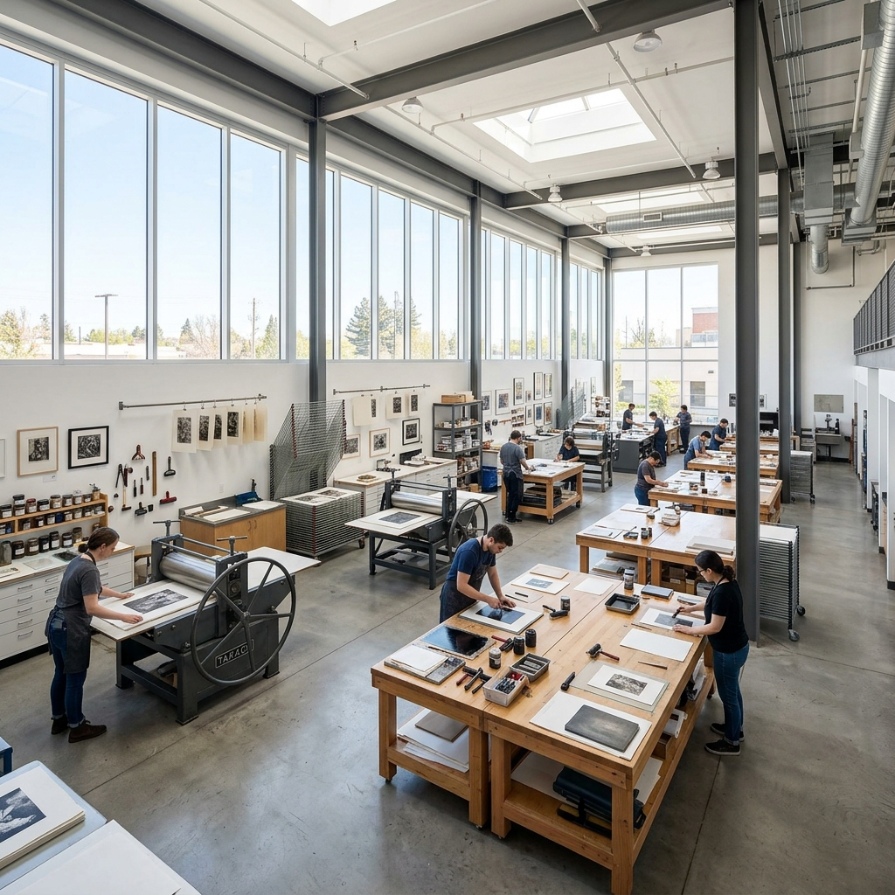
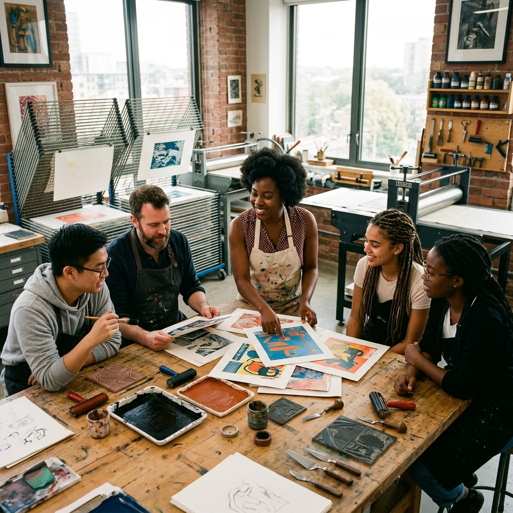

About the Studio
Preserving the tactile art of printmaking in a digital world.
Our Story
Founded in 2012 by master printmaker Julian Hayes, Relief Studio began as a small basement operation with a single vintage etching press. Over the years, it has blossomed into a comprehensive creative sanctuary for artists of all levels.
We believe in the power of handmade art. The smell of ink, the texture of fine cotton paper, and the physical effort required to pull a perfect print are experiences that cannot be replicated digitally.

Mission & Philosophy
Our mission is to make traditional printmaking techniques accessible while fostering a supportive community of creators. We aim to bridge the gap between historical craftsmanship and contemporary artistic expression.
We prioritize sustainable practices by using eco-friendly inks, safe non-toxic cleaning solvents, and ethically sourced papers whenever possible.

The Studio Space
A 3,000 square foot facility thoughtfully designed for printmakers, by printmakers. Equipped with natural north-facing light and industry-standard ventilation.

Our Creative Process
How we approach art in our studio.
Conceptualize
Every great print starts with a strong concept. We encourage extensive sketching and planning.
Execute
Meticulous carving, etching, or screen preparation relying on traditional techniques.
Refine
Proofing, adjusting pressure and ink consistency until the perfect edition is achieved.
Exhibit
Numbering, signing, and preparing the final run of high-quality prints for presentation.

A Thriving Community
Join over 200 local artists who call our studio home. We host monthly critiques, open houses, and collaborative portfolio exchanges.